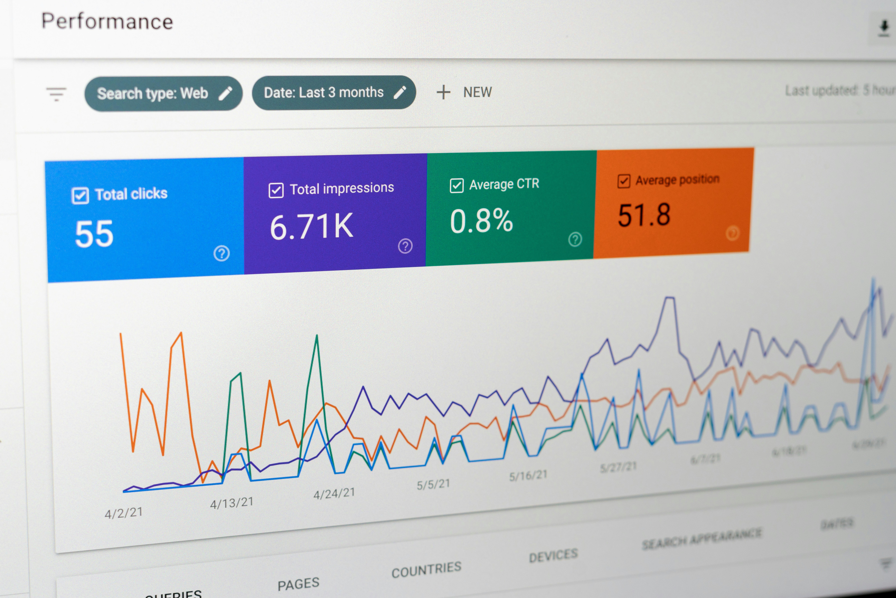

Marketing digital · Guia prático
O que é tráfego pago? Entenda como funciona
Anúncios pagos podem colocar uma empresa diante de pessoas que pesquisam um produto ou serviço. Entenda como funcionam as campanhas, o orçamento e o trabalho necessário para transformar cliques em oportunidades.
Quando uma empresa paga para divulgar anúncios em buscadores, redes sociais ou outros canais digitais, ela está comprando espaço para alcançar um público definido. Esse investimento é chamado de tráfego pago porque pode levar visitantes a um site, página, aplicativo ou conversa.
O anúncio pode aparecer para alguém que procura por um serviço no Google ou enquanto essa pessoa navega em uma rede social. A empresa paga conforme as regras da plataforma e do formato, como por clique, impressão ou resultado. O tráfego pago ajuda a ampliar a distribuição de uma oferta, mas não garante venda: o resultado depende também da relevância, da página de destino, do atendimento e da proposta.
O que é tráfego pago?
Tráfego pago é o conjunto de visitas ou contatos gerados por campanhas de mídia em que o anunciante investe dinheiro para exibir anúncios. No Google Ads, por exemplo, os anúncios de pesquisa podem participar de um leilão quando uma pessoa faz uma busca compatível com as palavras-chave e configurações da campanha.
Esse leilão não depende apenas do maior lance. O Google explica que a classificação também considera a qualidade do anúncio, o contexto da pesquisa e outros fatores. Por isso, anúncios mais relevantes podem alcançar boas posições sem que o maior lance vença sempre. Veja a explicação do leilão de anúncios do Google Ads.
Tráfego pago e tráfego orgânico são caminhos diferentes para atrair visitantes. No pago, a empresa investe para distribuir anúncios; no orgânico, as visitas chegam sem pagamento por cada exibição de anúncio, por meio de buscas, conteúdo, referências e outros canais. As duas frentes podem trabalhar juntas, cada uma com prazo, custos e formas de acompanhamento próprios.
Como funciona uma campanha de tráfego pago?
Antes de publicar anúncios, a empresa define o que quer alcançar, para quem vai anunciar, em quais regiões e qual ação espera que a pessoa realize. Uma campanha pode buscar visitas qualificadas, ligações, mensagens, pedidos de orçamento ou vendas. A meta precisa orientar as escolhas de público, mensagem, orçamento e mensuração.
- Objetivo: estabeleça qual ação tem valor para o negócio, como uma ligação ou um pedido de orçamento.
- Público e região: escolha quem deve ver o anúncio e em quais localidades a empresa realmente atende.
- Oferta e anúncio: explique o serviço, destaque uma razão concreta para entrar em contato e use uma chamada clara.
- Destino: direcione a pessoa para uma página ou canal que apresente as informações prometidas e facilite o próximo passo.
- Acompanhamento: confira os dados, aprenda com as consultas e interações e ajuste a campanha com base nos resultados.
Em campanhas de pesquisa, as palavras-chave ajudam a relacionar anúncios às consultas das pessoas. O Google Ads oferece opções de correspondência com níveis diferentes de abrangência; conhecer esses tipos e revisar os termos que acionaram anúncios ajuda a manter o investimento alinhado à intenção do público. Consulte a documentação sobre opções de correspondência de palavras-chave.
Quanto custa anunciar?
Não existe um preço único para tráfego pago. O anunciante define quanto pretende investir, e os custos variam conforme plataforma, concorrência, público, região, objetivo e configuração da campanha. Em uma campanha de pesquisa do Google Ads, por exemplo, é possível definir um orçamento diário médio e acompanhar os limites de gasto aplicáveis.
O valor destinado à plataforma de anúncios é diferente do valor pago pela gestão. Também podem existir custos com produção de criativos, página de destino, ferramentas e mensuração. Antes de começar, deixe claro quem paga cada item, quem é dono das contas e quais atividades estão incluídas no serviço.
Comece com um orçamento compatível com a realidade financeira da empresa e com o volume de dados necessário para avaliar a campanha. O Google descreve como funcionam lances e orçamentos no Google Ads, incluindo o orçamento diário médio e os limites de gasto. Evite tratar qualquer estimativa de cliques ou conversões como promessa de resultado.
O orçamento de mídia vai para a plataforma de anúncios. A gestão remunera o trabalho de planejamento, configuração, acompanhamento e análise. Combine os dois valores separadamente.
Gestor de tráfego pago
O gestor de tráfego pago planeja, configura e acompanha campanhas de anúncios para aproximar o investimento das metas definidas com a empresa. O trabalho pode incluir pesquisa de público e termos, estrutura de campanhas, configuração de anúncios, definição de orçamento, análise de desempenho e recomendações de melhoria.

Uma boa gestão começa entendendo o negócio: quais serviços são prioritários, onde a empresa atende, quais contatos têm mais valor e como a equipe responde aos interessados. O gestor também precisa explicar o que será medido, apresentar relatórios compreensíveis e comunicar limitações e hipóteses sem prometer vendas ou posições garantidas.
O profissional não substitui a qualidade do serviço, uma oferta competitiva, um site claro ou um atendimento rápido. A campanha pode gerar visitas, mas a empresa precisa estar pronta para receber e acompanhar esses contatos.
Como saber se a campanha está funcionando?
Não avalie uma campanha apenas pelo número de cliques. Relacione as métricas ao objetivo: custo por contato, ligações atendidas, pedidos qualificados, agendamentos ou vendas. Para isso, é importante definir quais ações contam como conversão e configurar o acompanhamento antes de tirar conclusões.
O Google Ads recomenda medir ações importantes, como compras, ligações ou cliques em botões, para entender se os anúncios contribuem para os resultados esperados. Saiba mais sobre as opções de acompanhamento de conversões.
- Confirme se os anúncios chegam ao público e à região planejados.
- Verifique se a página funciona bem no celular e deixa claro como entrar em contato.
- Compare o custo dos contatos com a qualidade e a possibilidade real de fechar negócio.
- Registre o que mudou na campanha e avalie períodos comparáveis antes de decidir os próximos passos.
Tráfego pago pode acelerar testes de divulgação e trazer dados sobre a resposta do público. Para pequenas empresas, tende a funcionar melhor quando faz parte de um plano que inclui uma oferta clara, presença digital confiável e acompanhamento dos contatos até o atendimento.